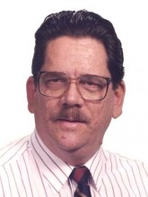

Please note: the AAS Obituaries are temporarily being hosted on this website while their full content is being ingested into the PubPub publishing platform newly adopted by the Bulletin of the American Astronomical Society. When the migration is complete, your existing links will take you to the final, migrated content. Contact peter.williams@aas.org with any questions.
John P. Oliver (1939-2011)
John P. Oliver, an emeritus professor of astronomy at the University of Florida in Gainesville, passed away Thursday, February 10, 2011, after a courageous and long battle with renal cancer. He left behind memories of a life and career to envy. During his forty years of service to his profession and department, this unique astronomer distinguished himself as a research scientist and instrumentalist, creative software designer, gifted teacher and speaker, a vocal advocate of public outreach, and friend to all who knew him.
Oliver was born in New Rochelle, New York, during late fall 1939 on November 24. His father, James P. Oliver, was a naval officer and his mother was the former Dorothy Armstrong Cambell. Oliver’s early days were spent in various cities due to his father’s military life but he eventually received a high school diploma from Princess Ann High School in Virginia.
Oliver subsequently graduated with a bachelor of science degree in physics in 1963 from the prestigious Rensselaer Polytechnic Institute in Troy. Lick Observatory awarded him a graduate assistantship so he moved west to California where he met and, on November 2, 1963, married Barbara Kay McKenna, who became his lifelong love and partner. In California Oliver had the good fortune to work with several eminent astronomers. This included Albert E. Whifford, director of Lick Observatory and known for his work on interstellar reddening, and Merle F. Walker, an expert in photometry, who also helped establish Pluto’s rotation period. His close relation with Lawrence H. Aller, one of the 20th century’s memorable astronomers, known for his ability to combine observation, theory and education, and for his care and kindness, helped bind Oliver and astronomy together for life. Oliver would also join the technical staff of the Aerospace Corporation, become an acting director of the Pine Mountain Observatory (University of Oregon), and a research assistant at the University of California in Los Angeles. Eventually, he earned both a master’s degree (1968) and Ph.D. (1974) in astronomy from this well-known institution.
The brilliant and eminent astronomer Daniel M. Popper supervised Oliver’s doctoral dissertation, “An Investigation of Eclipsing Binary Stars Exhibiting Calcium II Emission.” This research suggested that many systems Oliver investigated belonged to a new category of variable eclipsing binary stars. Popper had previously defined this new class of stars based on spectral features and intended AR Lac to be its prototype. Instead, using Oliver’s suggestion, this class became known as RS CVn variables. Rare among astronomers, Popper himself was fussy about errors of measurement—uncompromising about accurate, conscientious work and intolerant about careless research. Oliver was the only student to receive a Ph.D. under this authoritative and honest astronomer, a testament to Oliver’s own talents.
As a University of Florida faculty member and astronomer, Oliver occupied many roles, including service as associate department chair, director of the university’s Rosemary Hill Observatory near Bronson, Florida, and both undergraduate and graduate coordinators. He made significant contributions to both the operation and instrumentation of telescopes at Rosemary Hill Observatory. The establishment of the observatory’s 18-inch Ritchey-Crétien telescope as a working telescope was a major accomplishment for which he wrote its operational software and programs for high speed occultation observations of stars. In addition, he was responsible for both relocating the campus teaching observatory to its present site and its operation during the 1970s.
Oliver taught thousands of students both basic astronomy and advanced topics in undergraduate and graduate courses including an important sequence of graduate courses on binary stars. Faculty and students also applauded his superb, advanced course on techniques of observational astronomy. In addition, he was always looking for new techniques to improve teaching. He was among the first to adopt new technologies in the classroom, especially PowerPoint techniques for which he received university grants. Oliver’s computer skills also allowed him to design several, simple but important programs to help students understand difficult subjects. A favorite, “Oliver’s Orrery,” clearly shows how different models of the solar system produce planetary motions, a program that remains unique.
Research interests involved 3-mm radio astronomy, photometry of eclipsing binary systems, and the design of astronomical instruments and computer controlled telescopes. Oliver was the first visiting astronomer of the Copernicus Institute in Warsaw, Poland, where he helped participate in its establishment. He also held a joint appointment as Senior Research Scientist at UF’s Institute for Space Science and Technology from 1988 to 1994. During this time he was a co-investigator on the Long Duration Exposure Facility/Interplanetary Dust Experiment and the Clementine Orbital Meteoroid and Debris Counter. These experiments obtained data on the impact flux of natural micrometeoroids and provided information on the population of small mass, man-made debris in near Earth space. Oliver was twice a NASA Faculty Research Fellow at the Jet Propulsion Laboratory where he developed models used to predict meteoroid impacts on space probes. He was always excited about discovering orbital debris clouds around the Earth.
A favorite and special project from 1984 to 1988 was Oliver’s involvement as co-investigator on UF’s South Pole Optical Telescope where his knowledge of computer controlled instruments was vital. He visited the Amundsen-Scott South Pole station four times during Antarctic summers and the U.S. State Department and U.S. Navy awarded him the Antarctic Service Medal for activities in Antarctica in October 1986. This small, specialized instrument, the first stellar telescope located at Earth’s South Pole, operated for several seasons evaluating observing conditions at in the visible region of the spectrum.
In his last two years Oliver embarked on another unique project. In the North Irish town of Armagh, home of the Armagh Observatory, now stands a large, two-meter diameter “Celestial Sphere” made from solid polished grey granite. This impressive and beautiful star ball rests on one of four large base stones engraved to depict the story of the development of astronomy through the ages. On its surface, artist Brian Connolly has etched the brightest stars and other features of the sky in gold. The sphere is aligned north with the stars and correctly oriented toward the pole star. Although this artwork is the vision of the artist, Oliver provided the templates for the precise positions of stars and other heavenly features on the sphere.
Oliver had a long interest in public programming and public schools. He actively worked with middle school science teachers, was a creator of “Conversations About Science and Mathematics” and was an innovator in large classroom teaching. He volunteered as a science- and engineering-fair judge for more than twenty years, finally stopping only about a year before his death. Members of the Alachua Astronomy Club, Inc., favorably knew him for his interesting, absorbing and clear presentations. Few could converse as well on the wide spectrum of knowledge that modern astronomy now entails.
Predeceased by a son, Michael, he leaves behind his wife Barbara of forty-seven years, three children, Jennifer, Keith and Rebecca, two grandchildren, Elspeth and Moira, and a great granddaughter, Dorothy.
Oliver also left behind dear friends, colleagues, students and a legacy difficult to match. He was proud of the department that he had helped shape during his long tenure at UF. Oliver was unique among many astronomers due to his abilities and flair as an excellent speaker and teacher, a superb instrumentalist and programmer, and as a talented research scientist with an unequaled passion and dedication to astronomy and his department.
Obituary written by: Howard L. Cohen (University of Florida, Gainesville)
Additional links:
BAAS Citation: BAAS, 2011, 43, 026